Twenty different monsters and bosses for you to
slay, each one with unique item drops.
Five quests with great rewards.
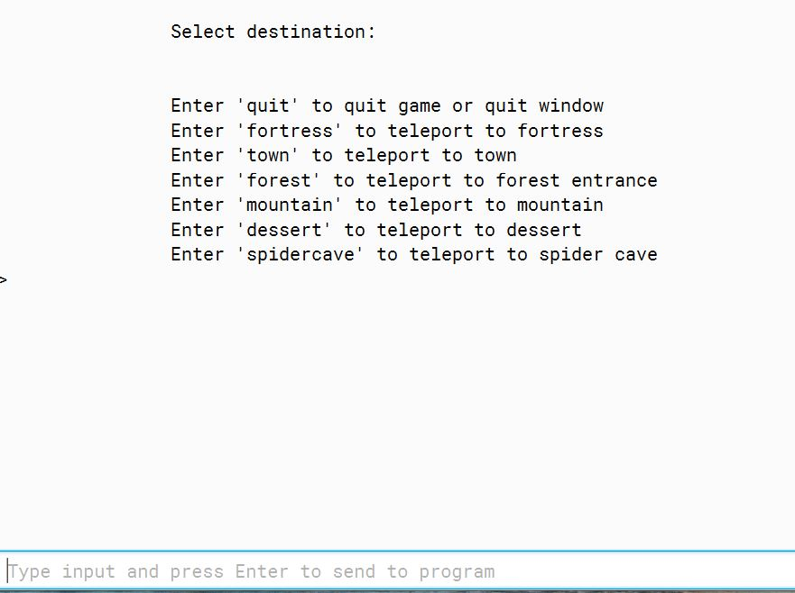
Quick teleport function available.
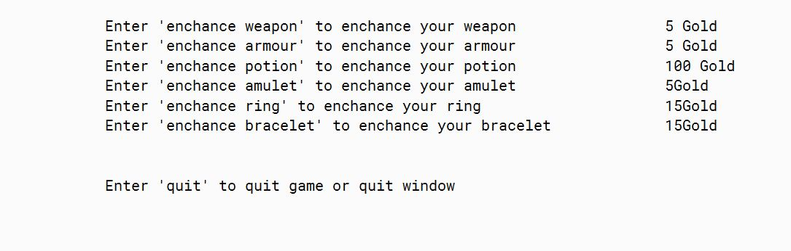
Blacksmith available to enhance and strenghten your items.
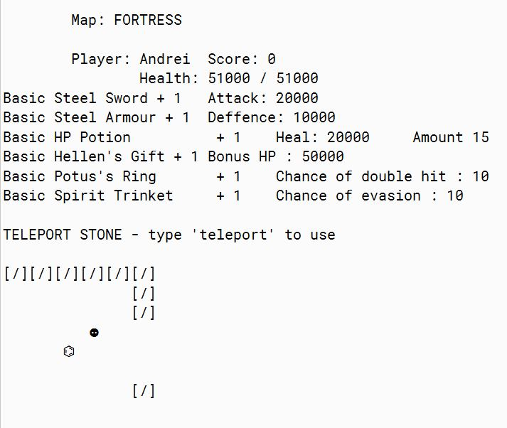
Seven equipable items with unique stats
ready to be obtained.
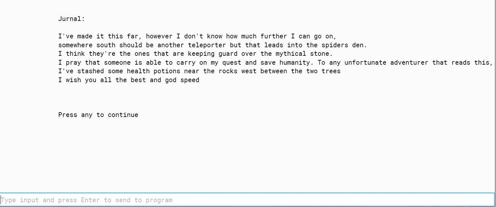
Tips and tricks given in game.
While learning Java programming, we were asked to create several basic applications using the BlueJ software.
Some of this applications include: A ticket machine software, a database software that keeps track of students and their
courses and modules, a stock management software and a text-based game.
I'm going to talk about this game and my learning experience while building it.
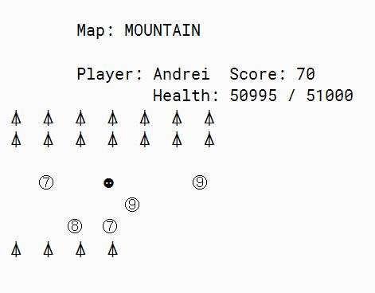
The game we created could follow as an example, the Colosal Cave Adventure text-based game.
'Colossal Cave Adventure (also known as ADVENT, Colossal Cave, or Adventure)[1] is a text adventure game,
developed between 1975 and 1977 by Will Crowther for the PDP-10 mainframe. The game was expanded upon in
1977 with help from Don Woods, and other programmers created variations on the game and ports to other systems
in the following years.
In the game, the player controls a character through simple text commands to explore a cave rumored to be
filled with wealth. Players earn predetermined points for acquiring treasure and escaping the cave alive,
with the goal to earn the maximum number of points offered. The concept bore out from Crowther's background
as a caving enthusiast, with the game's cave structured loosely around the Mammoth Cave system in Kentucky.
Colossal Cave Adventure is the first known work of interactive fiction and, as the first text adventure game,
is considered the precursor for the adventure game genre. Colossal Cave Adventure also contributed towards
the role-playing and roguelike genres.'
Our lecturers decided that we could create teams of up to three students. This way, we can
gain some experience in working in teams, and also have the chance to learn from eachother.
Team
Our lecturers decided that we could create teams of up to three students. This way, we can
gain some experience in working in teams, and also have the chance to learn from eachother.
Rory
Story Design
Rory has been an important asset for this project.
He has been mainly responsible with writing the story, but he also proved
very helpfull in bringing new functions ideas.
He also designed some of the maps, to go along with the story.
Warren
Testing
Warren has been just as important, playing the game over and over while
testing each function and bringing up issues he found.
He also proved realy helpful in designing some of the functions as, I assume, he plays lots of games.
Andrei
Programing
Myself, I was responsible with bringing all the ideas to life.
While it seems like the hardest job, I really enjoy writing programming.
Creating this game, was a great way to improve my Java programming skills.
The Game
The action takes place in a post-apocalyptic world.
The player finds itself in a fortress, a place where humans are hiding
themselves from the outside evil. Here, the player will find out it's purpose -
to bring back the mythical stone and place it in the church.
The player must find out the location of it, and how to obtain it.
The fortress is the start point of the player.
In this map, the player will meet a shop owner, who will allow the player to
purchase health potions and chest keys. Next to this shop, there is a blacksmith,
where the player can improve it's equipment in exchange of gold, the game currency.
While exploring the fortress, the player will find various items and gold hidden inside buildings.
The player will also obtain quests or get tips by interacting with people in the game. As rewards for
completing this quests the player will be given gold and items.
Inside this fortress there is a drunk man. By interacting with it, he will tell the player that he
used to be an adventurer, and gives the player a magic stone that will allow the player to travel between
known locations.
On the west side of the fortress, the player will meet a teleporter. Interacting with this will
allow the player to move to the next map, the Town.
The town is located west of the fortress.
Here, the player will find another shop, blacksmith and more people to interact with.
While traveling through this town the player will come across a guardian, which will
point the player to the next teleporter.
Reaching this teleporter means the player needs to explore a part of the forest, where
he will fight animals and obtain quest items and gold.
After finding the next teleporter, the player will be able to travel to the forrest.
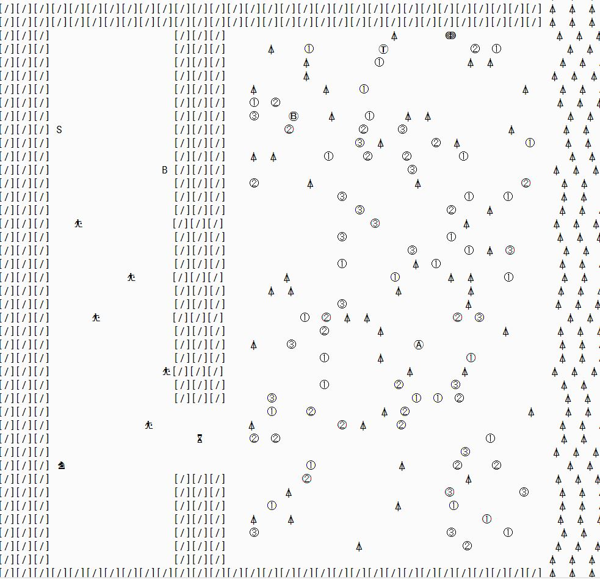
The forest is a map where the player can fight monsters and gain gold and items.
There is no other game objects here, but this map is designed like a maze, to spice things up.
This way, the player must explore the whole map to find clues.
This map connects to two other maps: The Dessert and The Mountain.
The two teleporters in this map are located in east and south.
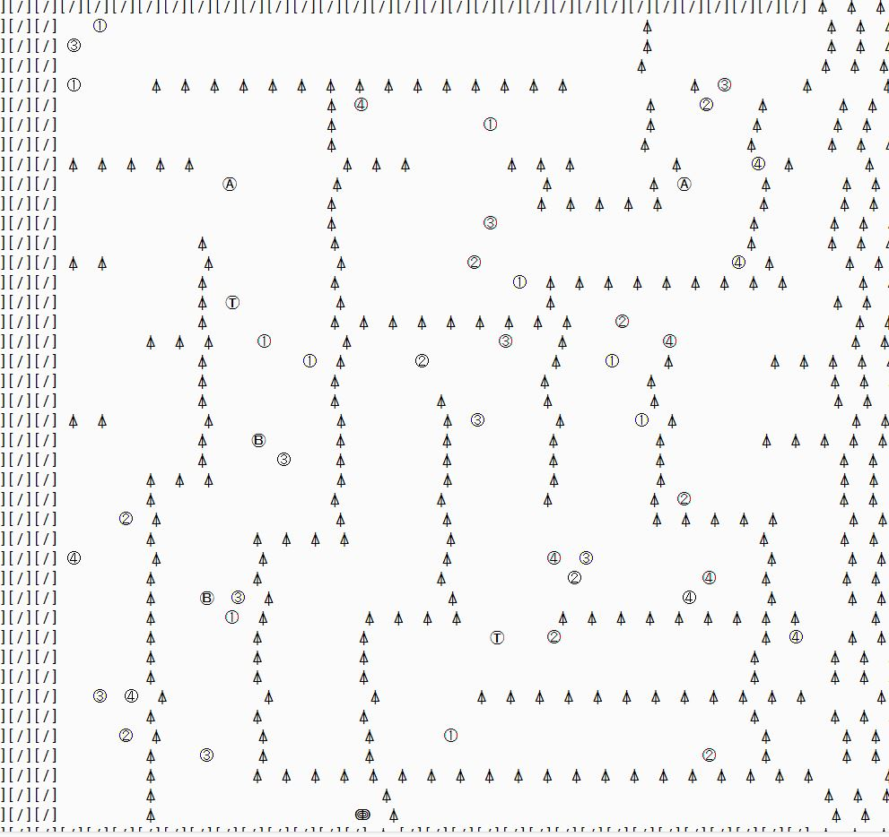
The dessert is quite similar to the forest.
When the player enters the map, he will come across a corpse. Interacting with this corpse,
the player will find a jurnal
that gives tips about the dessert and it's importance.
At the center of the maps, a teleporter will lead to the Spider Cave, but only if the player has
obtained the spider key, which is guarded by the Nine Tails, a fox, up on the mountain.
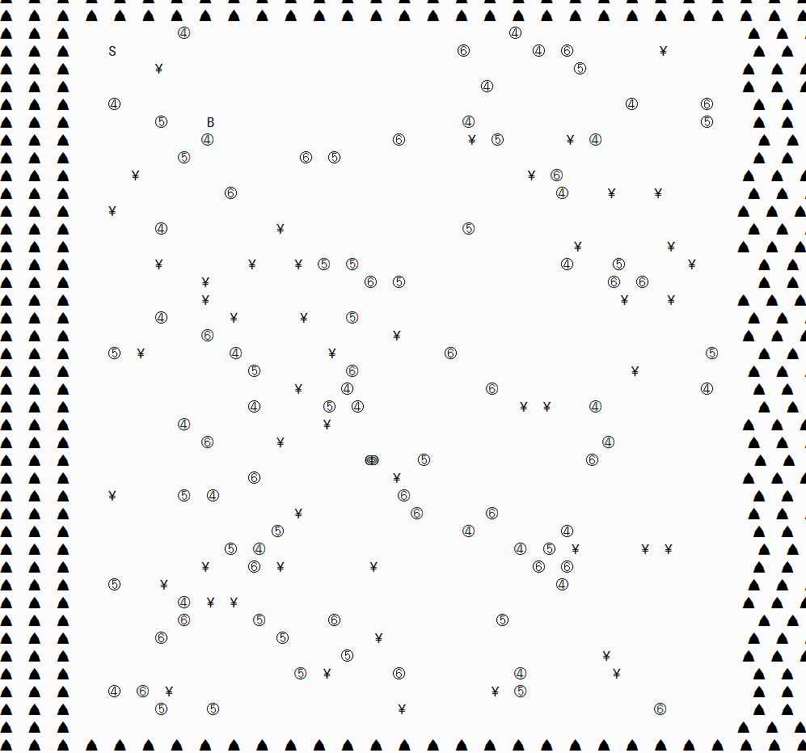
The Mountain - here, the player can colect quest items, and fight the Nine Tails to obtain the spider key.
The chance of dropping this key is 30%, so more attempts might be required.
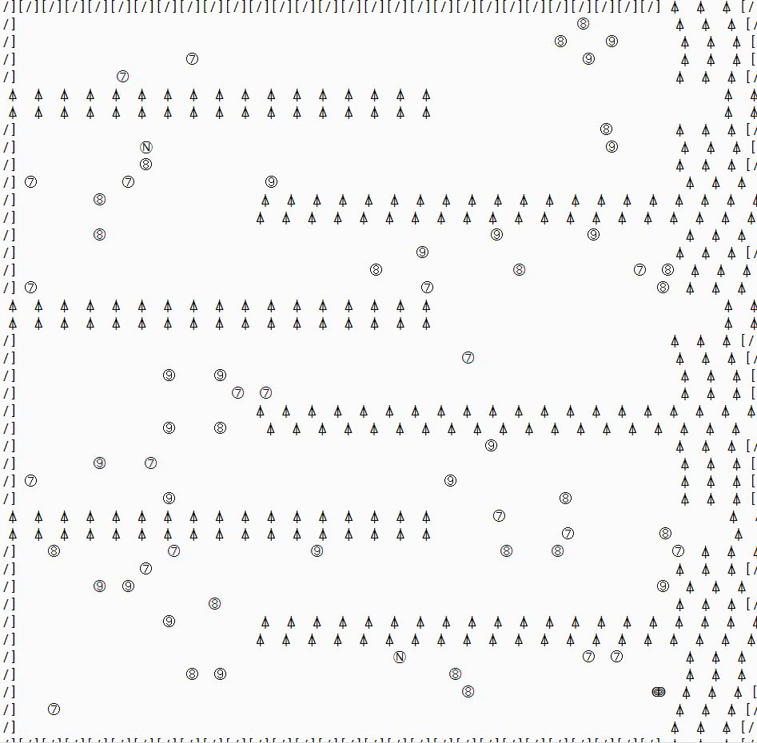
The Spider cave is very important as it leads to the tower.
In this cave, the player must find the spider queen and fight her to obtain the tower key.
When the queen dies, a teleporter will appear around the fight scene. This teleporter will lead to the tower,
if the player has obtained the key.
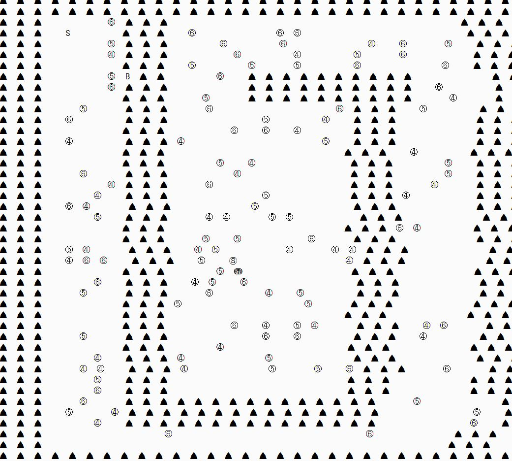
The tower is the hardest and most important map of the game.
The player finds himself at the first floor, where some low level monsters are located.
In order to progress through the tower, the player must clear the room. Once the room is cleared, a teleporer will
appear, and will take the player to the next floor, that contains stronger monsters.
The tower has 6 floors in total. On the fifth floor, the player will face the death, the second strongest monster
in the game. Killing this, will make the player face the Red Dragon which drops the Mythical stone that the player
needs to save the world.
After the player kills the dragon, he will be teleported back in the spider cave.
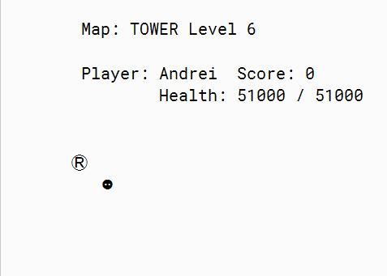
Other functions
Help Map
The player can track it's progress through the map by typing 'see location' in
the terminal window. This will print a full sized map that will show the player it's tracks from the start point
to it's current location.
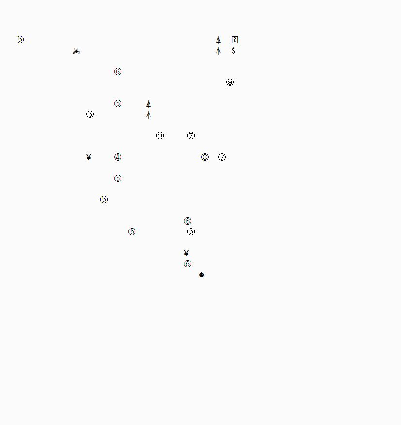
Hide stats/items
The player can chose weather he will see it's status or items on the screen by typing show/hide items
or show/hide stats.
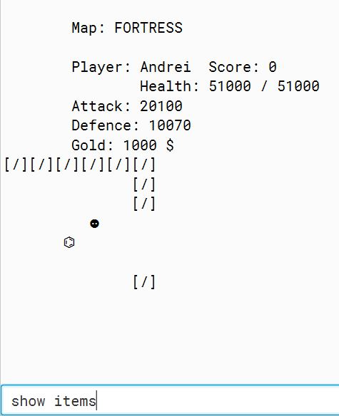
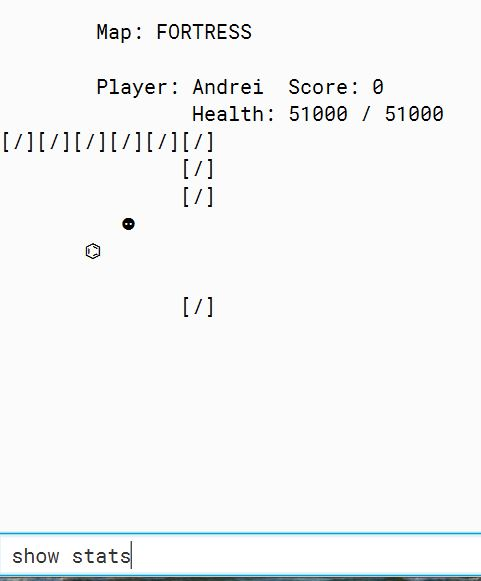
Database
The player can see a full list of game objects and a short description of them
by typing 'database' in the terminal window.
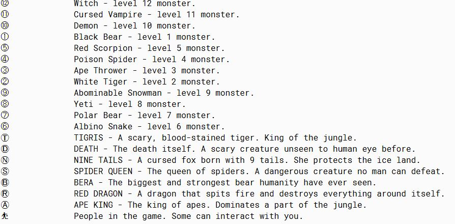
Monsters
The player can see a full list of monsters with their stats and the type of items
they drop on kill.
You can find more informations about the game by accessing the wiki page of the game on GitHub
here, And you can find the
source code here